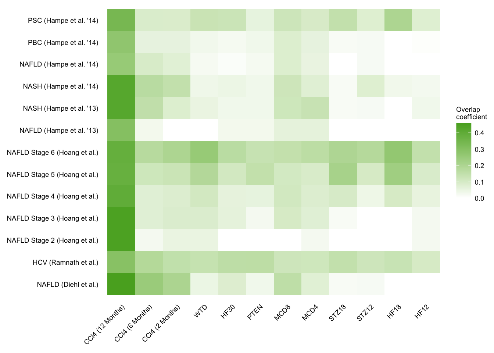
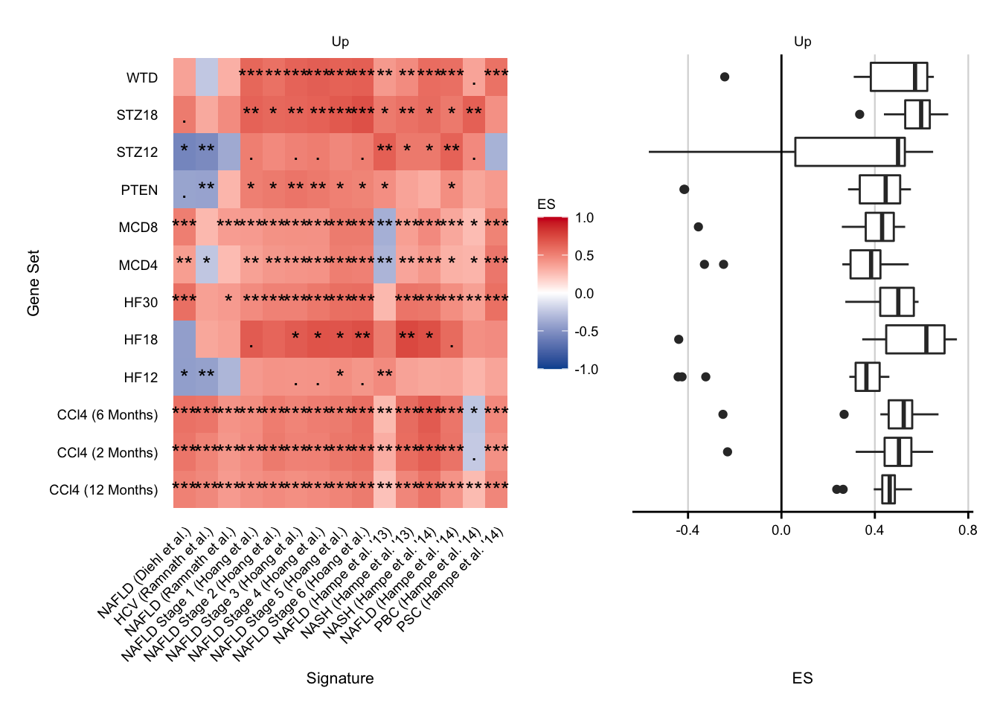
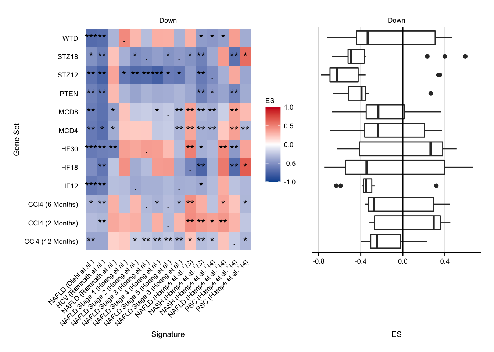
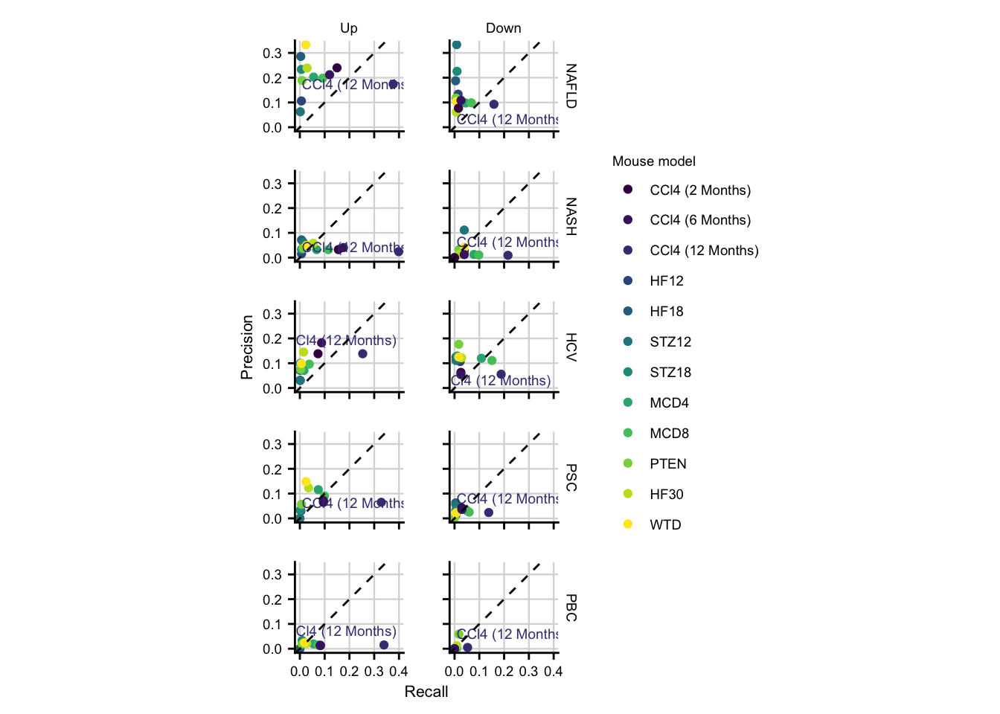
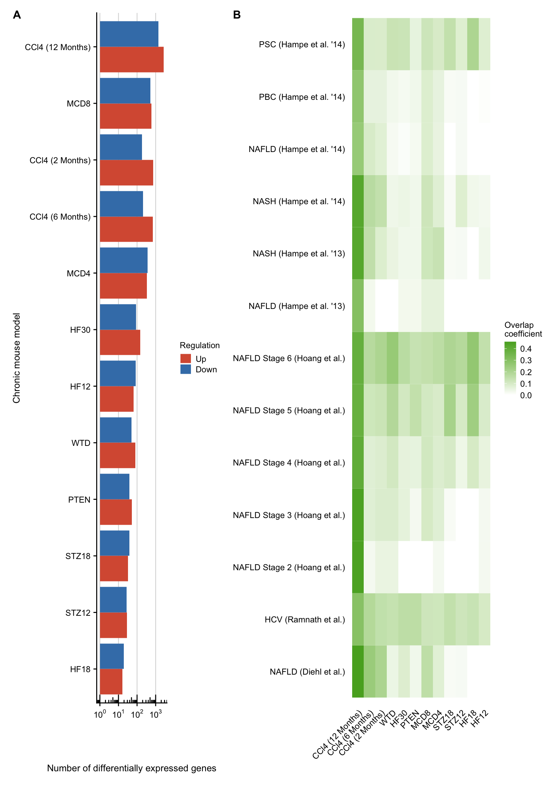

Precision and recall of chronic mouse models (Fig. 5)
Last updated: 2021-01-07
Checks: 7 0
Knit directory: meta-liver/
This reproducible R Markdown analysis was created with workflowr (version 1.6.2). The Checks tab describes the reproducibility checks that were applied when the results were created. The Past versions tab lists the development history.
Great! Since the R Markdown file has been committed to the Git repository, you know the exact version of the code that produced these results.
Great job! The global environment was empty. Objects defined in the global environment can affect the analysis in your R Markdown file in unknown ways. For reproduciblity it’s best to always run the code in an empty environment.
The command set.seed(20201218) was run prior to running the code in the R Markdown file. Setting a seed ensures that any results that rely on randomness, e.g. subsampling or permutations, are reproducible.
Great job! Recording the operating system, R version, and package versions is critical for reproducibility.
Nice! There were no cached chunks for this analysis, so you can be confident that you successfully produced the results during this run.
Great job! Using relative paths to the files within your workflowr project makes it easier to run your code on other machines.
Great! You are using Git for version control. Tracking code development and connecting the code version to the results is critical for reproducibility.
The results in this page were generated with repository version 9212828. See the Past versions tab to see a history of the changes made to the R Markdown and HTML files.
Note that you need to be careful to ensure that all relevant files for the analysis have been committed to Git prior to generating the results (you can use wflow_publish or wflow_git_commit). workflowr only checks the R Markdown file, but you know if there are other scripts or data files that it depends on. Below is the status of the Git repository when the results were generated:
Ignored files:
Ignored: .DS_Store
Ignored: .Rhistory
Ignored: .Rproj.user/
Ignored: analysis/human-diehl-nafld_cache/
Ignored: analysis/human-hampe13-nash_cache/
Ignored: analysis/human-hampe14-misc_cache/
Ignored: analysis/human-hoang-nafld_cache/
Ignored: analysis/human-ramnath-fibrosis_cache/
Ignored: analysis/meta-chronic-vs-acute_cache/
Ignored: analysis/meta-mouse-vs-human_cache/
Ignored: analysis/mouse-acute-apap_cache/
Ignored: analysis/mouse-acute-bdl_cache/
Ignored: analysis/mouse-acute-ccl4_cache/
Ignored: analysis/mouse-acute-lps_cache/
Ignored: analysis/mouse-acute-ph_cache/
Ignored: analysis/mouse-acute-tunicamycin_cache/
Ignored: analysis/mouse-chronic-ccl4_cache/
Ignored: analysis/plot-acute-apap_cache/
Ignored: analysis/plot-acute-bdl_cache/
Ignored: analysis/plot-acute-ccl4_cache/
Ignored: analysis/plot-acute-ph_cache/
Ignored: analysis/plot-chronic-ccl4_cache/
Ignored: analysis/plot-chronic-vs-acute_cache/
Ignored: analysis/plot-mouse-vs-human_cache/
Ignored: analysis/plot-study-overview_cache/
Ignored: analysis/plot-teufel-integration_cache/
Ignored: code/.DS_Store
Ignored: code/README.html
Ignored: code/meta-mouse-vs-human/.DS_Store
Ignored: data/.DS_Store
Ignored: data/README.html
Ignored: data/annotation/
Ignored: data/human-diehl-nafld/
Ignored: data/human-hampe13-nash/
Ignored: data/human-hampe14-misc/
Ignored: data/human-hoang-nafld/
Ignored: data/human-ramnath-fibrosis/
Ignored: data/meta-chronic-vs-acute/
Ignored: data/meta-mouse-vs-human/
Ignored: data/mouse-acute-apap/
Ignored: data/mouse-acute-bdl/
Ignored: data/mouse-acute-ccl4/
Ignored: data/mouse-acute-lps/
Ignored: data/mouse-acute-ph/
Ignored: data/mouse-acute-tunicamycin/
Ignored: data/mouse-chronic-ccl4/
Ignored: external_software/.DS_Store
Ignored: external_software/README.html
Ignored: external_software/stem/.DS_Store
Ignored: figures/
Ignored: output/.DS_Store
Ignored: output/README.html
Ignored: output/human-diehl-nafld/
Ignored: output/human-hampe13-nash/
Ignored: output/human-hampe14-misc/
Ignored: output/human-hoang-nafld/
Ignored: output/human-ramnath-fibrosis/
Ignored: output/meta-chronic-vs-acute/
Ignored: output/meta-mouse-vs-human/
Ignored: output/mouse-acute-apap/
Ignored: output/mouse-acute-bdl/
Ignored: output/mouse-acute-ccl4/
Ignored: output/mouse-acute-lps/
Ignored: output/mouse-acute-ph/
Ignored: output/mouse-acute-tunicamycin/
Ignored: output/mouse-chronic-ccl4/
Ignored: renv/library/
Ignored: renv/staging/
Ignored: tables/
Note that any generated files, e.g. HTML, png, CSS, etc., are not included in this status report because it is ok for generated content to have uncommitted changes.
These are the previous versions of the repository in which changes were made to the R Markdown (analysis/plot-precision-recall.Rmd) and HTML (docs/plot-precision-recall.html) files. If you’ve configured a remote Git repository (see ?wflow_git_remote), click on the hyperlinks in the table below to view the files as they were in that past version.
| File | Version | Author | Date | Message |
|---|---|---|---|---|
| Rmd | 9212828 | christianholland | 2021-01-07 | new build |
| html | 73708b1 | christianholland | 2020-12-29 | Build site. |
| Rmd | e0164ba | christianholland | 2020-12-29 | wflow_publish(c(“analysis/meta-mouse-vs-human.Rmd”, “analysis/plot-precision-recall.Rmd”), |
| html | c2af37f | christianholland | 2020-12-29 | Build site. |
| Rmd | be74953 | christianholland | 2020-12-29 | added script for fig5 |
| html | 067c933 | christianholland | 2020-12-23 | Build site. |
| Rmd | d4f78fa | christianholland | 2020-12-23 | wflow_publish("analysis/*.Rmd", delete_cache = T) |
Introduction
Here we generate publication-ready plots for the integration of further chronic mouse models.
Libraries and sources
These libraries and sources are used for this analysis.
library(tidyverse)
library(tidylog)
library(here)
library(AachenColorPalette)
library(scales)
library(UpSetR)
library(grid)
library(lemon)
library(ggrepel)
library(magick)
library(patchwork)
library(gtools)
source(here("code/utils-plots.R"))Definition of global variables and functions that are used throughout this analysis.
# i/o
data_path <- "data/meta-mouse-vs-human"
output_path <- "output/meta-mouse-vs-human"
# graphical parameters
# fontsize
fz <- 7
# keys to annotate contrasts
key_mm <- readRDS(here("data/meta-chronic-vs-acute/contrast_annotation.rds"))
key_hs <- readRDS(here("data/meta-mouse-vs-human/contrast_annotation.rds"))Chronic mouse model genes in number
keys <- key_mm %>%
distinct(study = contrast, label2)
df <- readRDS(here(output_path, "chronic_mouse_deg_numbers.rds")) %>%
left_join(keys, by = "study") %>%
mutate(label2 = coalesce(label2, study)) %>%
mutate(regulation = fct_rev(str_to_title(regulation)))
num_genes <- df %>%
ggplot(aes(y = fct_reorder(label2, n, sum), x = n, fill = regulation)) +
geom_col(position = "dodge") +
labs(
x = "Number of differentially expressed genes",
y = "Chronic mouse model",
fill = "Regulation"
) +
scale_x_log10(
breaks = trans_breaks("log10", function(x) 10^x),
labels = trans_format("log10", scales::math_format(10^.x))
) +
my_theme(grid = "x", fsize = fz) +
scale_fill_manual(values = aachen_color(c("red75", "blue75"))) +
annotation_logticks(sides = "b")
num_genes
| Version | Author | Date |
|---|---|---|
| c2af37f | christianholland | 2020-12-29 |
Similarity of chronic mouse models and patient cohorts
contrast_keys_human <- key_hs %>%
distinct(contrast, label, source, phenotype) %>%
unite(contrast, source, phenotype, contrast, sep = "-")
contrast_keys_mouse <- key_mm %>%
filter(str_detect(contrast, "pure")) %>%
distinct(contrast, label)
keys <- bind_rows(contrast_keys_mouse, contrast_keys_human)
o <- readRDS(here(output_path, "cross_species_similarity.rds"))
oo <- o %>%
rename(contrast = set1) %>%
left_join(keys, by = "contrast") %>%
mutate(label = coalesce(label, contrast)) %>%
rename(set1 = label, contrast = set2, contrast_set1 = contrast) %>%
left_join(keys, by = "contrast") %>%
mutate(label = coalesce(label, contrast)) %>%
rename(set2 = label, contrast_set2 = contrast) %>%
mutate(
contrast_set1 = factor(contrast_set1, levels = levels(o$set1)),
contrast_set2 = factor(contrast_set2, levels = levels(o$set2)),
set1 = fct_reorder(set1, as.numeric(contrast_set1)),
set2 = fct_reorder(set2, as.numeric(contrast_set2))
) %>%
select(set1, set2, similarity)
gs_sim <- oo %>%
filter(!str_detect(set1, "NAFLD|NASH|PSC|PBC|HCV")) %>%
filter(!str_detect(set2, "WTD|HF|PTEN|MCD|STZ|CCl4")) %>%
ggplot(aes(
x = set1, y = set2, fill = similarity,
label = round(similarity, 3)
)) +
geom_tile() +
scale_fill_gradient(low = "white", high = aachen_color("green")) +
labs(x = NULL, y = NULL, fill = "Overlap\ncoefficient") +
theme(
axis.text.x = element_text(angle = 45, hjust = 1),
axis.line = element_blank(),
axis.ticks = element_blank()
) +
theme(axis.text.x = element_text(angle = 45, hjust = 1)) +
my_theme(fsize = fz, grid = "no")
gs_sim
Enrichment of chronic mouse genes in patient cohorts
contrast_keys_human <- key_hs %>%
distinct(contrast, label, source) %>%
unite(contrast, source, contrast)
contrast_keys_mouse <- key_mm %>%
filter(str_detect(contrast, "pure")) %>%
distinct(contrast, label)
keys <- bind_rows(contrast_keys_mouse, contrast_keys_human)
gsea_res <- readRDS(here(output_path, "cross_species_enrichment.rds")) %>%
rename(contrast = signature) %>%
inner_join(keys, by = "contrast") %>%
select(-contrast) %>%
rename(signature = label, contrast = geneset) %>%
left_join(keys, by = "contrast") %>%
mutate(label = coalesce(label, contrast)) %>%
select(-contrast) %>%
rename(geneset = label) %>%
mutate(direction = fct_rev(str_to_title(direction)))
tile_up <- gsea_res %>%
filter(direction == "Up") %>%
mutate(
label = stars.pval(padj),
direction = fct_rev(direction)
) %>%
ggplot(aes(x = signature, y = geneset, fill = ES)) +
geom_tile() +
geom_text(aes(label = label)) +
facet_rep_wrap(~direction, scales = "free", ncol = 1) +
my_theme(grid = "no", fsize = fz) +
theme(
axis.text.x = element_text(angle = 45, hjust = 1),
axis.line = element_blank(),
axis.ticks = element_blank()
) +
scale_fill_gradient2(
low = aachen_color("blue"), mid = "white",
high = aachen_color("red"), limits = c(-1, 1)
) +
my_theme(grid = "no", fsize = fz) +
labs(x = "Signature", y = "Gene Set", fill = "ES") +
guides(fill = guide_colorbar(title = "ES"))
box_up <- gsea_res %>%
filter(direction == "Up") %>%
ggplot(aes(y = geneset, x = ES)) +
geom_boxplot() +
facet_rep_wrap(~direction, ncol = 1) +
geom_vline(xintercept = 0) +
my_theme(fsize = fz, grid = "x") +
theme(
axis.text.y = element_blank(),
axis.title.y = element_blank(),
axis.line.y = element_blank(),
axis.ticks.y = element_blank()
)
tile_down <- gsea_res %>%
filter(direction == "Down") %>%
mutate(
label = stars.pval(padj),
direction = fct_rev(direction)
) %>%
ggplot(aes(x = signature, y = geneset, fill = ES)) +
geom_tile() +
geom_text(aes(label = label)) +
facet_rep_wrap(~direction, scales = "free", ncol = 1) +
my_theme(grid = "no", fsize = fz) +
theme(
axis.text.x = element_text(angle = 45, hjust = 1),
axis.line = element_blank(),
axis.ticks = element_blank()
) +
scale_fill_gradient2(
low = aachen_color("blue"), mid = "white",
high = aachen_color("red"), limits = c(-1, 1)
) +
my_theme(grid = "no", fsize = fz) +
labs(x = "Signature", y = "Gene Set", fill = "ES") +
guides(fill = guide_colorbar(title = "ES"))
box_down <- gsea_res %>%
filter(direction == "Down") %>%
ggplot(aes(y = geneset, x = ES)) +
geom_boxplot() +
facet_rep_wrap(~direction, ncol = 1) +
geom_vline(xintercept = 0) +
my_theme(fsize = fz, grid = "x") +
theme(
axis.text.y = element_blank(),
axis.title.y = element_blank(),
axis.line.y = element_blank(),
axis.ticks.y = element_blank()
)
tile_up + box_up
| Version | Author | Date |
|---|---|---|
| c2af37f | christianholland | 2020-12-29 |
tile_down + box_down
| Version | Author | Date |
|---|---|---|
| c2af37f | christianholland | 2020-12-29 |
Etiology genes in numbers
df <- readRDS(here(output_path, "etiology_gene_sets.rds"))
mat_up <- df %>%
filter(regulation == "up") %>%
select(-regulation) %>%
mutate(val = 1) %>%
spread(etiology, val, fill = 0) %>%
data.frame(row.names = 1)
pdf(file = here("figures/tmp/Fig5A1.pdf"), width = 15, height = 10, onefile = F)
upset(mat_up,
nintersects = NA, mainbar.y.label = "Common genes",
sets.x.label = "Total number of genes",
text.scale = 3, point.size = 5
)
grid.text("Up", x = 0.65, y = 0.95, gp = gpar(fontsize = fz * 3))
dev.off()
#> quartz_off_screen
#> 2
mat_down <- df %>%
filter(regulation == "down") %>%
select(-regulation) %>%
mutate(val = 1) %>%
spread(etiology, val, fill = 0) %>%
data.frame(row.names = 1)
pdf(file = here("figures/tmp/Fig5A2.pdf"), width = 15, height = 10, onefile = F)
upset(mat_down,
nintersects = NA, mainbar.y.label = "Common genes",
sets.x.label = "Total number of genes",
text.scale = 3, point.size = 5
)
grid.text("Down", x = 0.65, y = 0.95, gp = gpar(fontsize = fz * 3))
dev.off()
#> quartz_off_screen
#> 2PR scatter plot
keys <- key_mm %>%
distinct(study = contrast, label2)
pr <- readRDS(here(output_path, "precision_recall.rds")) %>%
left_join(keys, by = "study") %>%
mutate(label2 = coalesce(label2, study)) %>%
mutate(regulation = fct_rev(str_to_title(regulation))) %>%
mutate(x = case_when(
str_detect(label2, "12 Month") ~ as.character(label2),
TRUE ~ NA_character_
)) %>%
mutate(etiology = factor(etiology, levels = c(
"NAFLD", "NASH", "HCV", "PSC",
"PBC"
)))
pr_plot <- pr %>%
ggplot(aes(x = recall, y = precision, label = x, color = label2)) +
geom_point() +
facet_rep_grid(etiology ~ regulation) +
geom_text_repel(size = fz / (14 / 5), show.legend = FALSE, na.rm = TRUE) +
geom_abline(lty = "dashed") +
expand_limits(x = 0, y = 0) +
labs(x = "Recall", y = "Precision", color = "Mouse model") +
my_theme(fsize = fz) +
scale_color_viridis_d() +
coord_fixed()
pr_plot
| Version | Author | Date |
|---|---|---|
| c2af37f | christianholland | 2020-12-29 |
Collage
Figure 5
Main Figure.
upset_up <- image_ggplot(image_read_pdf(here("figures/tmp/Fig5A1.pdf")),
interpolate = TRUE)
# file.remove(here("figures/tmp/Fig5A1.pdf"))
upset_down <- image_ggplot(image_read_pdf(here("figures/tmp/Fig5A2.pdf")),
interpolate = TRUE
)
# file.remove(here("figures/tmp/Fig5A2.pdf"))
fig5 <- (upset_up | upset_down) /
((pr_plot | plot_spacer()) + plot_layout(widths = c(2, 1))) +
plot_layout(height = c(1, 3)) +
plot_annotation(tag_levels = list(c("A", "", "B"))) &
theme(
plot.tag = element_text(size = fz + 3, face = "bold"),
legend.key.height = unit(11.5, "pt"),
legend.key.width = unit(12.5, "pt")
)
fig5
| Version | Author | Date |
|---|---|---|
| c2af37f | christianholland | 2020-12-29 |
ggsave(here("figures/Figure 5.pdf"), fig5,
width = 21, height = 29.7, units = c("cm")
)
ggsave(here("figures/Figure 5.png"), fig5,
width = 21, height = 29.7, units = c("cm")
)Supplementary Figure 5.1
sfig5_1 <- ((num_genes | gs_sim) + plot_layout(width = c(1, 2))) /
((tile_up + box_up) + plot_layout(width = c(4, 1), guides = "collect")) /
((tile_down + box_down) + plot_layout(width = c(4, 1), guides = "collect")) +
plot_annotation(tag_levels = list(c("A", "B", "C", "", "D"))) &
theme(
plot.tag = element_text(size = fz + 3, face = "bold"),
legend.key.height = unit(11.5, "pt"),
legend.key.width = unit(12.5, "pt")
)
sfig5_1
ggsave(here("figures/Supplementary Figure 5.1.pdf"), sfig5_1,
width = 21, height = 29.7, units = c("cm")
)
ggsave(here("figures/Supplementary Figure 5.1.png"), sfig5_1,
width = 21, height = 29.7, units = c("cm")
)Time spend to execute this analysis: 00:49 minutes.
sessionInfo()
#> R version 4.0.2 (2020-06-22)
#> Platform: x86_64-apple-darwin17.0 (64-bit)
#> Running under: macOS Mojave 10.14.5
#>
#> Matrix products: default
#> BLAS: /Library/Frameworks/R.framework/Versions/4.0/Resources/lib/libRblas.dylib
#> LAPACK: /Library/Frameworks/R.framework/Versions/4.0/Resources/lib/libRlapack.dylib
#>
#> locale:
#> [1] en_US.UTF-8/en_US.UTF-8/en_US.UTF-8/C/en_US.UTF-8/en_US.UTF-8
#>
#> attached base packages:
#> [1] grid stats graphics grDevices datasets utils methods
#> [8] base
#>
#> other attached packages:
#> [1] gtools_3.8.2 patchwork_1.1.1 magick_2.5.2
#> [4] ggrepel_0.9.0 lemon_0.4.5 UpSetR_1.4.0
#> [7] scales_1.1.1 AachenColorPalette_1.1.2 here_1.0.1
#> [10] tidylog_1.0.2 forcats_0.5.0 stringr_1.4.0
#> [13] dplyr_1.0.2 purrr_0.3.4 readr_1.4.0
#> [16] tidyr_1.1.2 tibble_3.0.4 ggplot2_3.3.2
#> [19] tidyverse_1.3.0 workflowr_1.6.2
#>
#> loaded via a namespace (and not attached):
#> [1] httr_1.4.2 viridisLite_0.3.0 jsonlite_1.7.2 modelr_0.1.8
#> [5] pdftools_2.3.1 assertthat_0.2.1 askpass_1.1 renv_0.12.3
#> [9] cellranger_1.1.0 yaml_2.2.1 qpdf_1.1 pillar_1.4.7
#> [13] backports_1.2.1 lattice_0.20-41 glue_1.4.2 digest_0.6.27
#> [17] promises_1.1.1 rvest_0.3.6 colorspace_2.0-0 cowplot_1.1.0
#> [21] htmltools_0.5.0 httpuv_1.5.4 plyr_1.8.6 clisymbols_1.2.0
#> [25] pkgconfig_2.0.3 broom_0.7.3 haven_2.3.1 whisker_0.4
#> [29] later_1.1.0.1 git2r_0.27.1 generics_0.1.0 farver_2.0.3
#> [33] ellipsis_0.3.1 withr_2.3.0 cli_2.2.0 magrittr_2.0.1
#> [37] crayon_1.3.4 readxl_1.3.1 evaluate_0.14 fs_1.5.0
#> [41] fansi_0.4.1 xml2_1.3.2 tools_4.0.2 hms_0.5.3
#> [45] lifecycle_0.2.0 munsell_0.5.0 reprex_0.3.0 compiler_4.0.2
#> [49] rlang_0.4.9 rstudioapi_0.13 labeling_0.4.2 rmarkdown_2.6
#> [53] gtable_0.3.0 codetools_0.2-16 DBI_1.1.0 R6_2.5.0
#> [57] gridExtra_2.3 lubridate_1.7.9.2 knitr_1.30 rprojroot_2.0.2
#> [61] stringi_1.5.3 Rcpp_1.0.5 vctrs_0.3.6 dbplyr_2.0.0
#> [65] tidyselect_1.1.0 xfun_0.19